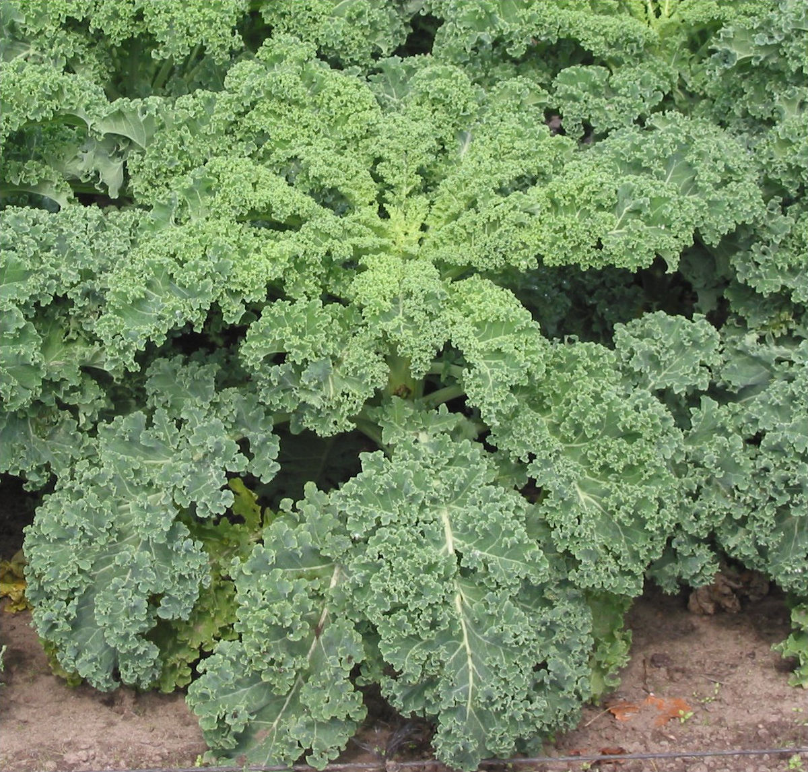

Home Page
Kale and Sausage

Got some random pieces of food left over from other recipes in the fridge?
Need something quick to make? Look no further! In this recipe we will make
something quick and easy to help with that hunger.
Ingredients list:
- Kale
- Spinach (You don't have to add this if you don't want to.)
- Sausage (Any type of sausage works.)
- Olive Oil
- Feta Cheese
- Salt and Pepper
How to make Kale and Sausage:
- Preheat a skillet on medium heat
- Cut up the sausage into rounds
- Add olive oil to the pan
- Add the sausage to the pan
- Add the Kale and Spinach
- Pour a little olive oil onto the Kale and Spinach
- Sprinkle the Salt and Pepper over the ingredients
- Move everything about to stop things from burning and that the sausage is cooked on both sides
- Put food onto a plate and sprinkle some Feta Cheese and enjoy!